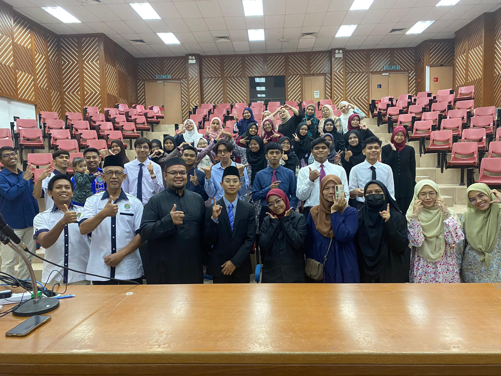
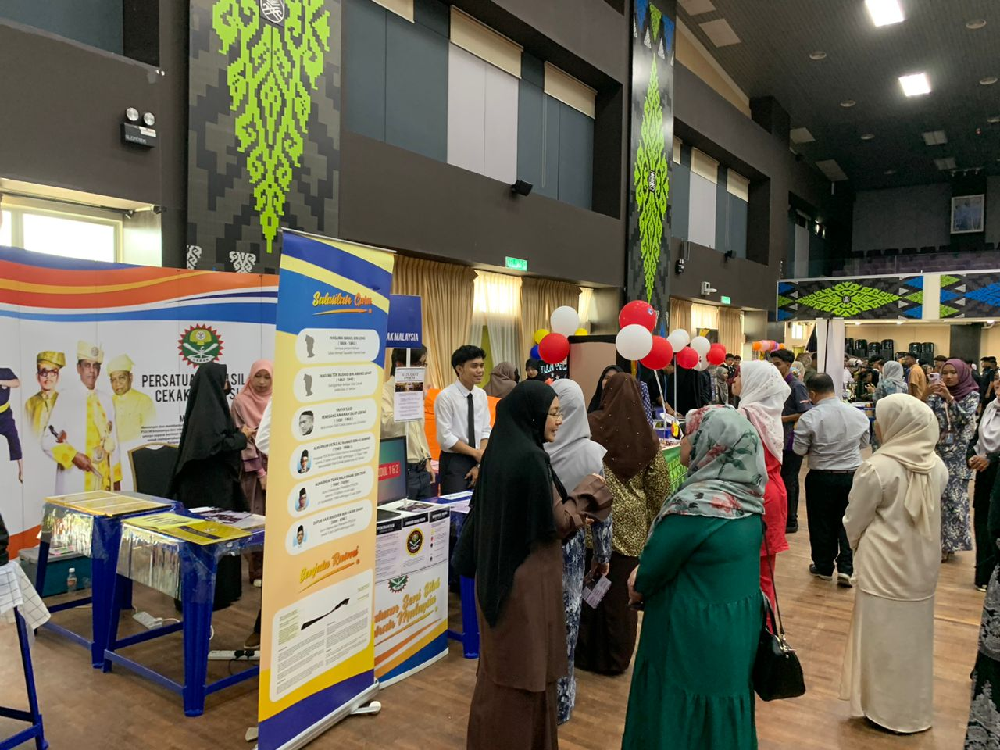
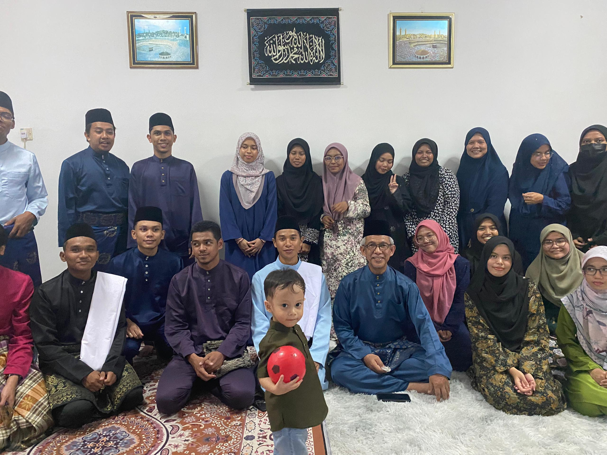
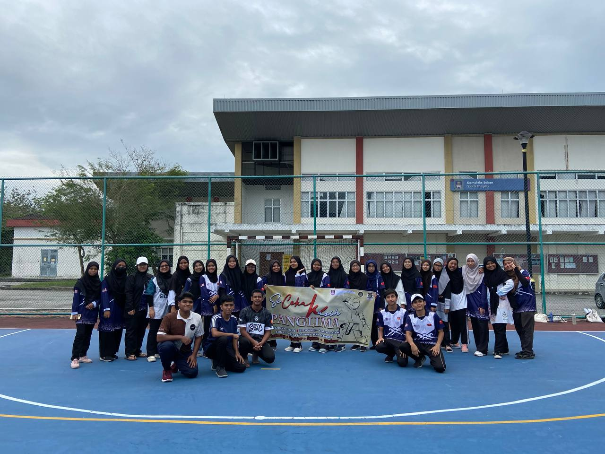
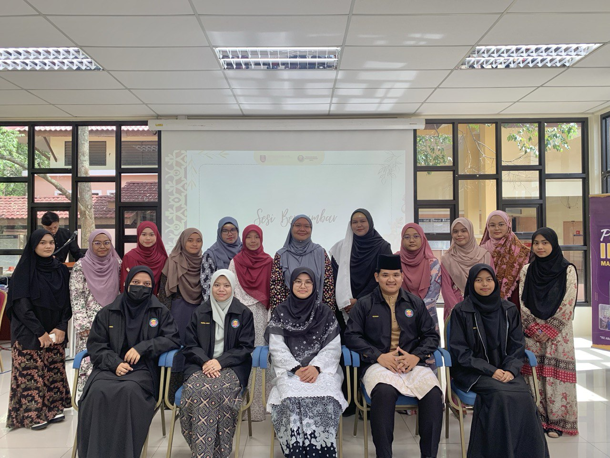
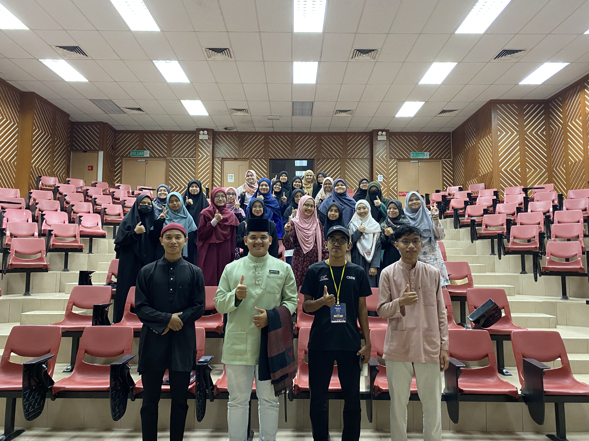
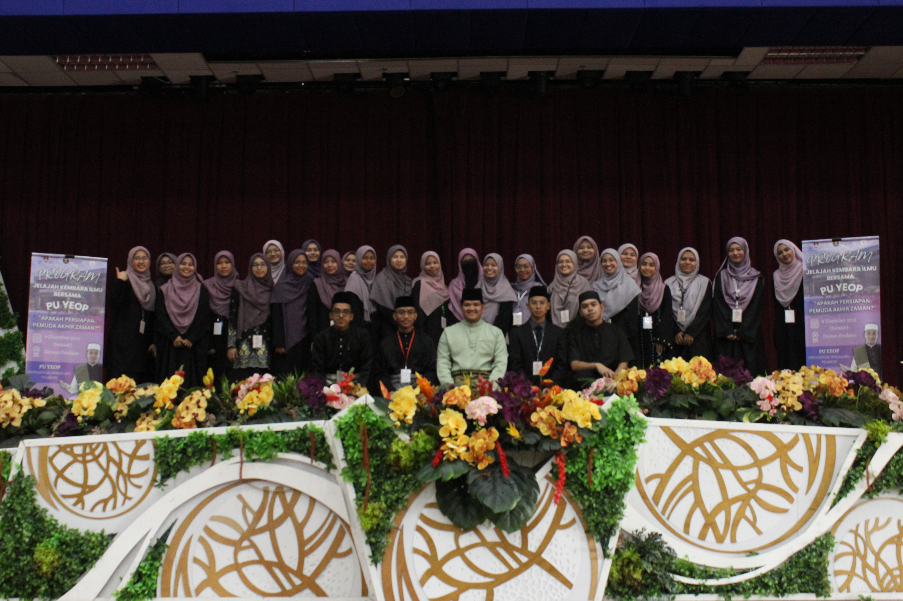
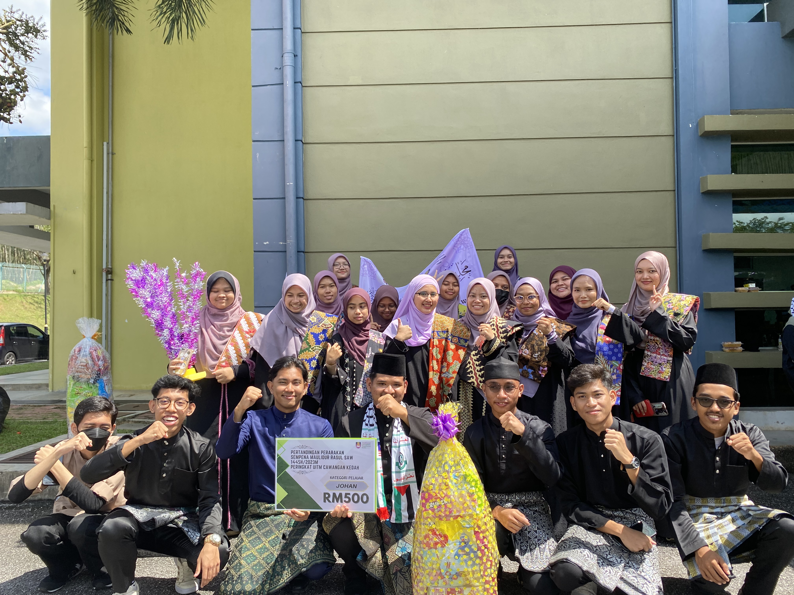

Silat Cekak Malaysia is one of the original Malay martial arts that was once practiced by the senior commander of the Kedah kingdom during the Sultanate period of Sultan Ahmad Tajuddin II. It has only 21 subjects, of which it emphasizes 99% self defense and 1% attack.
I have joined the Persatuan Seni Silat Cekak Malaysia (PSSCM) since the 1st semester. I got to know this association through the Club Festival that was held that semester. I am interested in joining this club because the members of this club say that silat cekak is Muslimah friendly. In addition, another factor that motivated me to participate in silat cekak was because I did not have any knowledge of self-defense. Finally, I wanted to continue my family legacy in the art of martial arts (seni persilatan).
This is the photo during the PSSCM Annual Grand Meeting (AGM) held in January 2024. The AGM was held to appoint new Committee Members. Alhamdulillah, in this AGM I was trusted and appointed as Secretary of PSSCM UiTM Kedah.
This picture shows the atmosphere when Club Festival was held. PSSCM has opened an exhibition booth to attract more UiTM Kedah students to join PSSCM.
This is the picture when the PSSCM UiTM Kedah members went to Majlis Ijazah.
This is a picture of one of the programs we have organized which is the Secekak Kasih Panglima interaction camp. This program is held to bond between new members and old members of PSSCM. Various interesting activities are held, including exploration, traditional sports and aerobics. Many sweet memories we have created together. In this association, we have been considered as one family.

Persatuan Ikatan Mahasiswa Dinamis (IMAN) is an association that is an initiative to bring students closer to spiritual and religious activities. I joined this association also in semester 1 at Club Festival. I joined this association because I didn't want to be far from religion since I didn't take a course in the religious field.
This is a photo during the IMAN Annual General Meeting (AGM) held in January 2024. The AGM was held to appoint new Committee Members. Alhamdulillah, in this AGM this time I was trusted and appointed as Head of Exco for the Student Affairs Bureau (HELWI) IMAN UiTM Kedah.
This picture is a Meet & Greet with IMAN program. This program was held to introduce the new leadership to the IMAN committee members.
In the last October 2023 - February 2024 semester, IMAN organized a lecture program delivered by PU Yeop.
In conjunction with the Maulidur Rasul celebration in 2023, UiTM Kedah has organized a parade competition. There are various contingents that participate in the parade, one of which is IMAN. IMAN wears a black themed dress, a purple headscarf and batik fabric as rida'. And Alhamdulillah IMAN has been crowned as the champion of the parade.